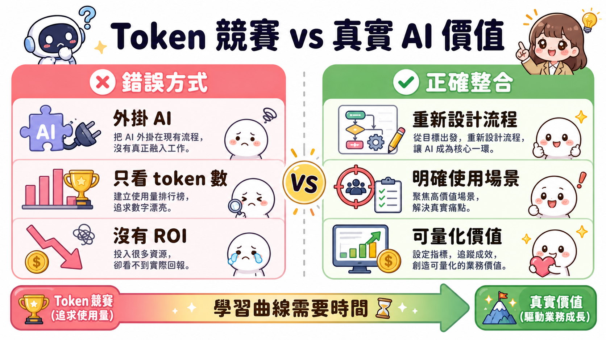
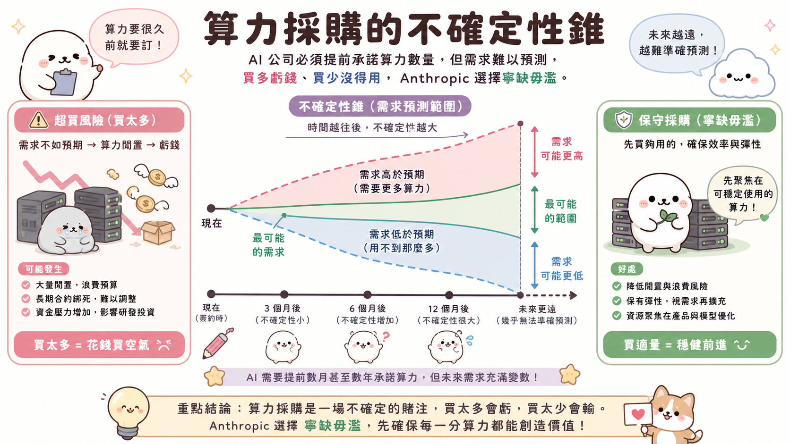
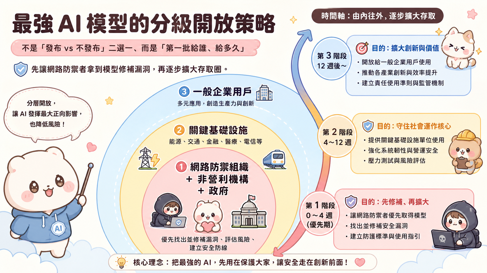

一、兩個人才能跑一家公司
一般人對「共同創辦人分工」的想像，大概是「一個管技術、一個管業務」。Anthropic 的分工看起來也是這樣——技術願景與日常營運一分為二——但真正有意思的地方不在分工本身，而在分工背後的決策哲學。
Dario 的角色是持續把整個公司的注意力拉回到技術的長期走向，反覆提醒規模與野心；Daniela 的角色則是把這個願景落地成每天要做的一千個決定：要支持哪些客戶、要怎麼調配研究資源、執行團隊怎麼協作。這兩件事如果只有一個人做，很容易互相吞噬。
更深一層的洞察在於：這種分工不是能力互補，而是觀察角度的互補。Daniela 描述的核心機制是：當兩人對同一件事看法不同，預設反應不是辯論誰對，而是「好奇為什麼你看到的跟我不一樣」。通常其中一方會有另一方沒有的資訊或脈絡，結果是產生第三個更好的答案，而不是其中一方贏。
她說八九成的爭議都會在這個過程中「在中間相遇」。這句話背後有一個假設：雙方都有局部正確，合理的答案往往不在任何一個人的預設立場裡，需要摩擦才能浮現。
這個機制在兄弟姊妹之間有幾十年的練習基礎，放進公司後成為一種難以複製的決策資產。
二、$470 億的估值不是答案，是陷阱
Bloomberg 主持人拿出一個很直接的問題：你們的年化營收衝到 $470 億、估值首次超越 OpenAI，你覺得自己是領先者了嗎？
Daniela 的回答是：這個問題的前提就是錯的。
這不是謙虛的外交辭令。她的意思是，「誰領先」這個框架本身就會把注意力帶到錯誤的地方。Anthropic 起家的原因是想把 AI 建得更負責任、更安全、更公平——這些目標沒辦法用市占或估值排名來衡量。如果開始在乎「我是第一名嗎」，就代表已經偏離了真正的工作。
這裡有一個商業邏輯上的深層一致性：當你的使命是建造對社會有益的 AI，你的成功指標就不該是相對排名，而是絕對表現。今天估值超過誰，明天就可能被超過——這個波動對核心任務沒有任何意義。
真正值得在乎的是：今天有沒有好好服務依賴你的企業客戶？有沒有以謙遜和專注做出決策？
$470 億是媒體的故事，不是公司每天早上起來要問的問題。
三、IPO 的本質是物理問題，不是財務問題
Anthropic 秘密提交了 S-1 申請。消息出來後，外界的反應多半集中在「是不是要跟 OpenAI 搶第一家上市的 AI 公司」。
Daniela 把問題切到更底層：訓練前沿 AI 模型是一個資本密集度極高的事業，不是因為奢侈，而是因為這就是這件事的物理結構。要讓模型跑起來、要持續推進前沿，需要的算力規模和對應的資金規模，遠超過一般風投輪次能提供的上限。
她的觀點是：公開市場不是一個選項，而是必然的基礎設施。長期而言，維持在前沿的公司都需要這個層級的資本管道，這個結構性現實跟任何一家公司的具體情況無關。
至於「搶第一」——她的態度和回答市場地位問題時完全一致：這不是我們要思考的問題。
四、「Token 競賽」是企業界最新的自我欺騙
Bloomberg 提出一個正在業界流傳的擔憂：有些公司建立了「誰用最多 AI token」的內部排行榜，但 Uber 的高管開始說，如果沒有清楚的 ROI 數據，AI 支出很難繼續被批准。這是真的問題嗎？
Daniela 沒有迴避，但她的分析切點不一樣。她先承認模型進步確實是真實的，能力的飛躍是真實的。但她說，真正的問題不是「有沒有人在浪費」，而是「企業和員工還沒有學會怎麼用」。
今天很多企業使用 AI 的方式，是把現有工作流程原封不動地接上 AI，然後希望它自動變好。這不是整合，這是外掛。真正的整合需要重新思考工作如何被組織、哪些任務適合 AI、哪些任務的本質需要人類判斷——這個學習過程需要時間，不是幾個月，可能是幾年。
排行榜只衡量使用量，不衡量價值。這個錯誤指標製造出一種焦慮感，讓人覺得「我必須用，但我不知道用來做什麼」。等這個焦慮期過去，真正發現 AI 的工作方式會更深入、更自然地嵌進工作本身，那時候的 ROI 才會真正浮現。
她自己給了一個具體的例子：Anthropic 的人力資源團隊用 Claude 重新設計了績效評估流程，讓員工可以在自評時把過去六個月的工作記錄一起帶進來。同事們的反應是：這樣做好玩多了，也更有意義。這不是「token 使用量」，這是用對了地方。

錯誤的整合方式只是把 AI 外掛在既有流程上；真正的價值來自重新設計工作本身。
五、算力的「不確定性錐」：Anthropic 選擇不豪賭的理由
OpenAI 搶下了大規模資料中心合約，有報導說要花到一兆美元。Anthropic 的策略明顯保守很多，最近才開始跟 SpaceX 租算力。外界問：事後看來，你們是不是少買了？
Daniela 的回答引入了一個她稱為「不確定性錐」的概念。算力採購的結構問題是：你必須提前很久承諾數量，但未來的需求極難預測。如果買多了，你在付你無法使用的算力的錢；如果買少了，你有需求但無法服務客戶。
Anthropic 的選擇是寧可在需求端稍微緊一點，也不要在供給端過度囤積。她說：我們寧願客戶需求比我們能服務的多一點，也不要反過來。
這個邏輯背後有財務紀律的考量，但也有一個更深的信念：在一個任何人都說不清楚未來長什麼樣的領域，謹慎是對的。AI 是讓她最驚訝的技術領域——它持續顛覆所有人對「接下來會發生什麼」的預測。面對這種不確定性，保守採購比賭注押大更理性。
至於太空數據中心？她笑說不會是 2027 年的待辦事項，但她也補充：在 AI 這個領域，「你永遠不知道」是唯一誠實的答案。

越往未來看，算力需求的不確定性越大——Anthropic 寧可需求略超供給，也不願為閒置算力付帳。
六、AI 的地緣政治現實：不做選邊站的選邊站
Anthropic 和五角大廈曾有一段公開的摩擦，起因是 AI 軟體使用限制的問題。Daniela 被問到：現在更樂觀還是更悲觀？
她的回答揭示了一個經常被忽略的邏輯：如果你認為自己是一個負責任的 AI 實驗室，那你就必須跟政府合作，沒有選擇。因為 AI 已經是地緣政治議題，不跟各層級政府建立工作關係，就等於放棄對自己認為重要的規則的影響力。
Anthropic 是第一個進入最高機密雲端的 AI 公司，這不是政治表態，而是實踐「如果我們想讓這項技術被安全地部署，我們就得在場」。
被追問是否因為 Anthropic 堅守原則讓競爭對手談成更好的政府合約時，她的回答很直接：我沒辦法控制其他公司做什麼。我只能確保 Anthropic 的立場和行動是一致的，可以向員工和外界清楚解釋。這是我們能影響的部分。
這個答案的底層邏輯，和她回答市場排名問題時完全一樣：放棄對外部相對比較的執著，專注在自己能掌握的絕對行為。
七、AI 財富集中的問題，比任何一家公司都大
Anthropic 的共同創辦人公開承諾捐出 80% 的股權。主持人問：你支持加州的億萬富翁稅嗎？
Daniela 沒有正面回答稅制問題，但她把更深的問題說清楚了：AI 正在創造巨量財富，如果沒有刻意的干預，這些財富會高度集中，就像過去每一次主要技術變革一樣，不平等會加劇而不是縮小。
她說 Anthropic 能控制的部分，是自己作為公司和個人怎麼選擇使用這些收益。但財富分配的結構性問題，已經超出任何單一公司的邊界，需要整個社會層面的討論和行動。
這不是一個「AI 公司假裝有社會責任感」的公關訊息，而是一個有邏輯一致性的立場：你相信技術可能加劇不平等，所以你在自己能控制的地方做出對應的選擇，同時承認更大的問題需要更大的機制來處理。
八、白領消失預言的另一面：人類唯一不可取代的東西
Dario 公開說過 AI 可能消除一半白領工作。Daniela 被問到：你同意嗎？解決方案是什麼？
她的回答先建立資料基礎：Anthropic 持續發布社會衝擊研究，目前看到的數據是——在 2025-2026 年，AI 直接取代工作的比例極小，主要集中在海外客服類工作（而這些工作已經在被傳統機器學習自動化）。
但她沒有因此說「那就沒問題」。她說：這可能改變，而且改變的速度和形式無從預測。
真正有意思的是她對「解法」的看法。她不接受「把 AI 整合進現有工作流程然後沒事了」這個預設答案——那只是用技術複製了現有的人類工作組織方式，沒有思考過人類到底需要什麼。
她認為有一個更根本的選擇：我們可以用 AI 去加速和放大那些「只有人類才能做、而且人類真正享受的」部分——與他人連結、共同創作、辯論、相互依賴。AI 不會把這些帶走，但如果我們不主動設計，預設的經濟結構可能讓人們失去用這些方式換取生計的機會。
她說，現在是整個社會最重要的時刻，需要認真問：我們希望人類可以過什麼樣的生活？然後朝那個方向走。
九、最強模型的分級開放：給防禦者先走
Anthropic 的最強模型（訪談中以代稱「mythos」提及）因為能夠偵測並利用軟體安全漏洞，一開始限制了存取。後來逐步放開。主持人問：是模型變得更安全了，還是方法改變了？
Daniela 說：方法改變了，而且是刻意設計的。
核心邏輯是：對任何安全漏洞情境，你必須讓防禦者先有時間準備。Anthropic 把模型的初始存取權給了網路防禦組織——非營利機構、政府機構、關鍵基礎設施保護單位。這些人拿到模型，去掃描和修補那些模型能發現的漏洞。等他們有足夠的前置時間，才開始擴大存取範圍。
她說：如果今天不是我們發布這個能力等級的模型，明天就是另一家 AI 公司。問題不是要不要發布，而是「第一批存取者是誰」。這一點真的有差。
這個框架打破了一個常見的二元對立：「發布 vs. 不發布」。真實的決策空間是：「以什麼順序、給誰、在什麼時間點發布」。

從最核心的網路防禦者開始，逐層向外擴大存取範圍——讓防禦者永遠比攻擊者先一步。
十、消費者市場的邊界：不是娛樂工具
最後一個問題：Anthropic 什麼時候進攻消費者市場？
Daniela 的回答區分了兩件事：Anthropic 確實有消費者產品（就是 Claude.ai），但他們對消費者的定義和很多競爭對手不同。
Anthropic 的消費者是「用 AI 做有生產力的事的人」——學習、工作、處理生活中複雜的行政事務。她舉了一個例子：作為媽媽，用 Claude 整理兒子申請幼稚園的文件，這不是工作，但這是真實的生活需求，也是有意義的使用。
他們刻意不往「娛樂」方向走。這不只是產品策略，而是反映了公司的核心信念：AI 的價值在於讓人更有能力，而不是讓人更消遣。這個邊界對 Anthropic 來說，和「企業優先」一樣，是寫進 DNA 的選擇。
結語：節制作為競爭優勢
這場訪談裡，最一致的主旋律不是技術，而是一種反直覺的選擇：在市場排名上保持冷靜、在算力投資上保持謹慎、在 AI 治理上選擇配合而非對抗、在財富問題上選擇公開承諾、在最強模型的發布上選擇分級而非全開。
每一個選擇都有代價。但 Daniela 描述的 Anthropic，是一家刻意用這些代價來換取另一種東西的公司——對自己在做什麼、為什麼這樣做、以及這件事對世界意味著什麼，保持清醒。
在這個每個人都在加速的時代，他們選擇的是：先搞清楚自己要去哪。